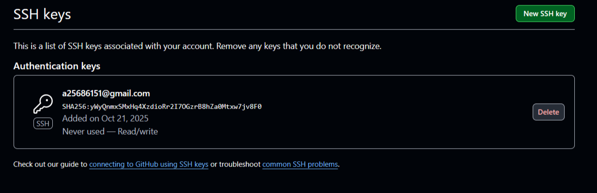
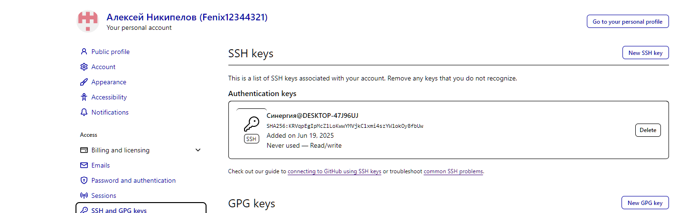
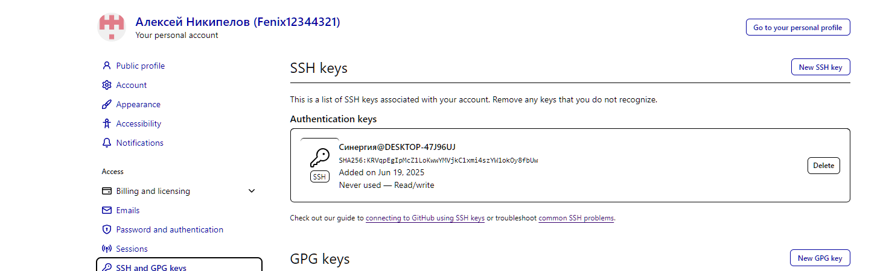
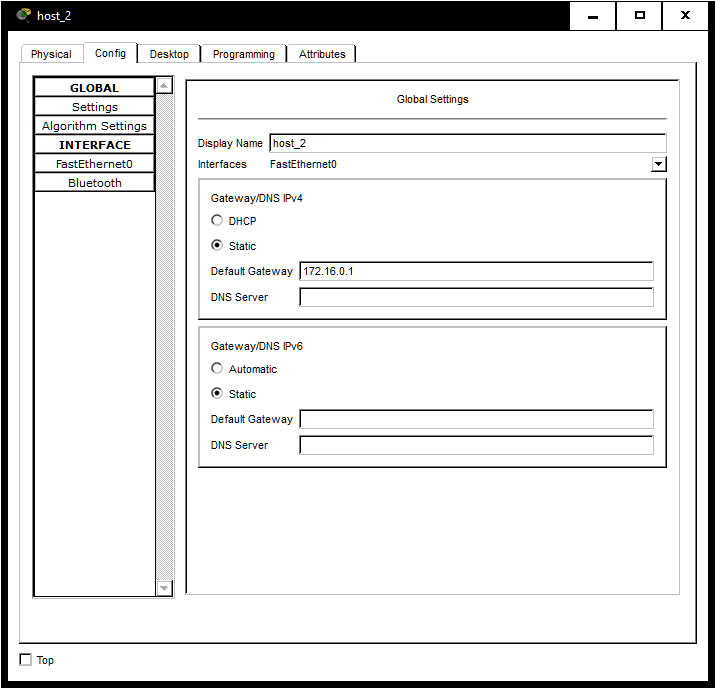
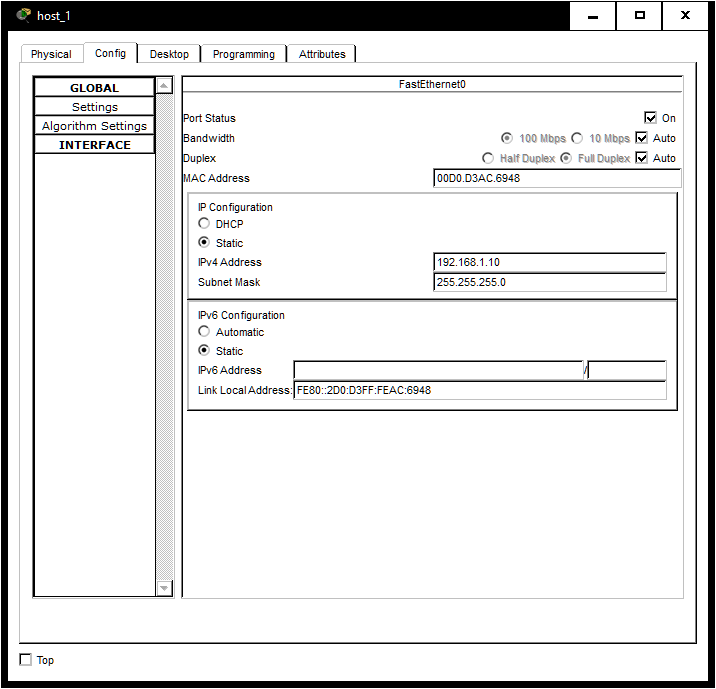
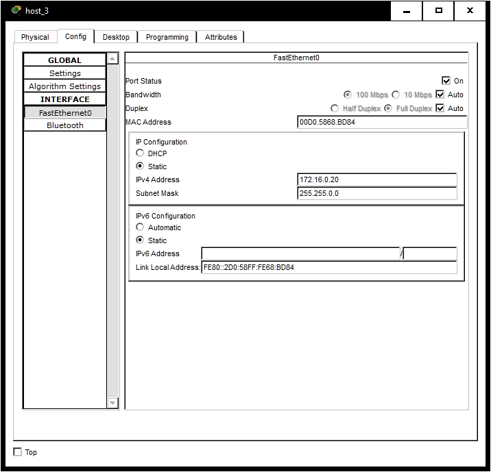
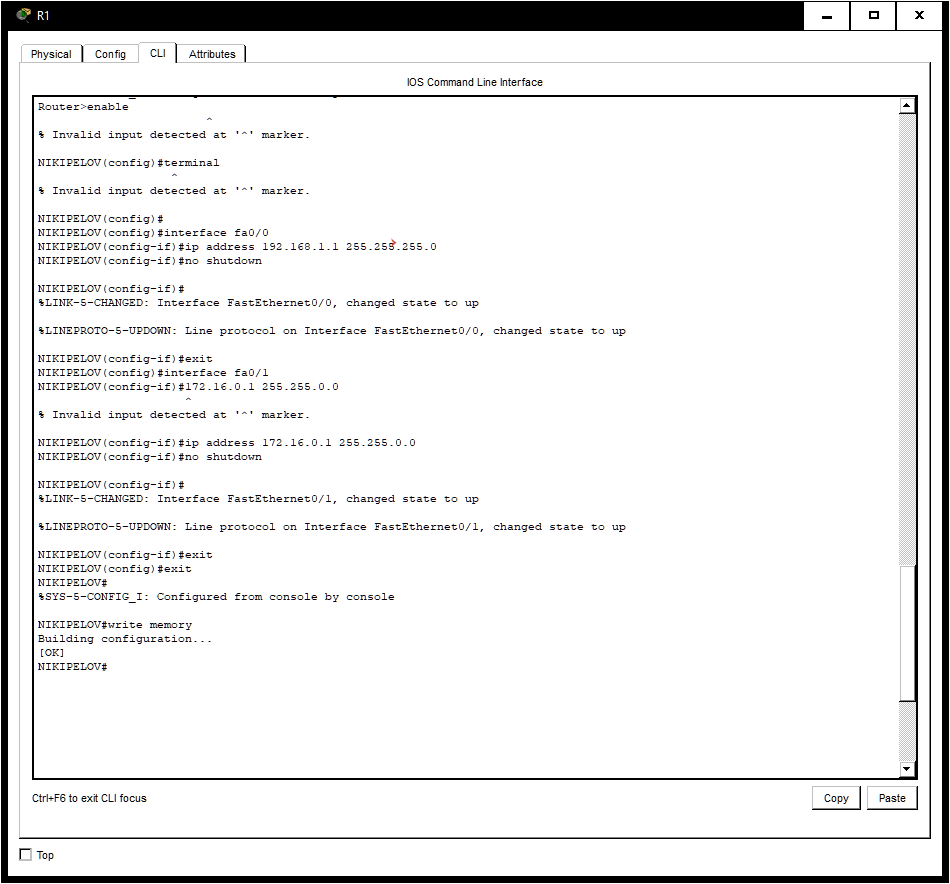
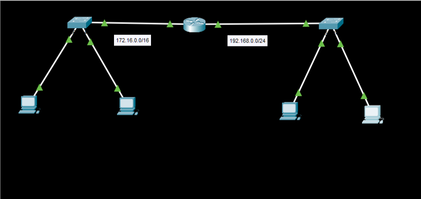

Создать репозиторий github, настроить пару ключей для доступа
- Создал аккаунт Fenix12344321 на github.
- Создал репозиторий -1- на нашем аккаунте.
- В репозитории размещен файл README.md
- На компьютере установил программу Git Bash доступную по ссылке
- Осуществил начальную настройку параметров программы Git Bash
- Создал пару SSH-ключей
- Добавил на компьютере в файл \etc\ssh_config следующую запись:
- Добавили в раздел https://github.com/settings/keys информацию для SSH keys 
- Настроить PC
- Настроить маршрутизатор R1
- Проверка связности между двумя сегментами сети командой ping


git config --global user.email "a25686151@gmail.com"
ls

Создал новую папку OKS, инициализировал её как локальный репозиторий
cd OKS
git init


HostName github.com/Fenix12344321/-1-
User Fenix12344321
IdentityFile C:\Users\User1\.ssh/personal_key
IdentitiesOnly yes
Также подключил созданный приватный ключ
Конфигурирование устройств сети
Для настройки компьютеров, выбираем соответствующий хост. На вкладке Config в разделе FastEthernet в полях Ipv4 Address и Subnet Mask прописываем необходимые сетевые конфигурации. Далее выбираем в этой же вкладке раздел Settings и в поле Default Gateway указываем адрес соответствующего интерфейса маршрутизатора, к которому подключен коммутатор. Для host_1:
 
 Для host_2:
 Для host_3:

Для host_4:
Нажимаем на изображение маршрутизатора. Выбираем вкладку CLI. Нажимаем Enter и набираем следующую программу:
Router#config terminal
Enter configuration commands, one per line. End with CNTL/Z.
Router(config)#hostname Nikipelov
Nikipelov(config)#
Nikipelov(config)#interface fa0/0
Nikipelov(config-if)#ip address 192.168.1.1 255.255.255.0
Nikipelov(config-if)#no shutdown
Nikipelov(config-if)#exit
Nikipelov(config)#interface fa0/1
Nikipelov(config-if)#ip address 172.16.0.1 255.255.0.0
Nikipelov(config-if)#no shutdown
Nikipelov(config-if)#exit
Nikipelov(config)#exit
Nikipelov#Add commentMore actions
%SYS-5-CONFIG_I: Configured from console by console
Nikipelov#write memory
Building configuration...
[OK]
В результате получим:
Выполним пинг с host_1 до всех других устройств
Выполним пинг с host_3 до всех других устройств:
Все пинги проходят. Все устройства связаны
Спасибо за внимание